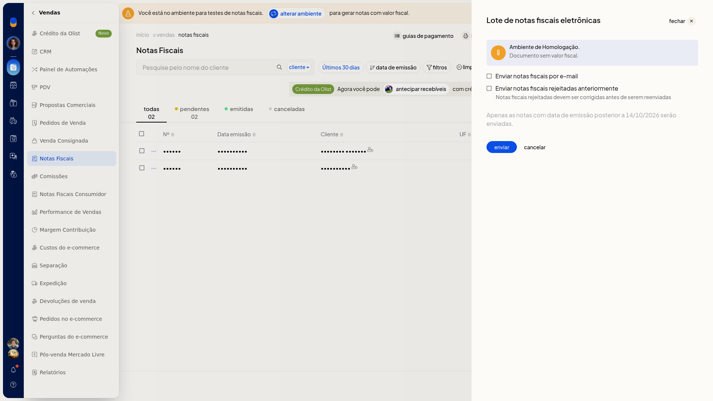
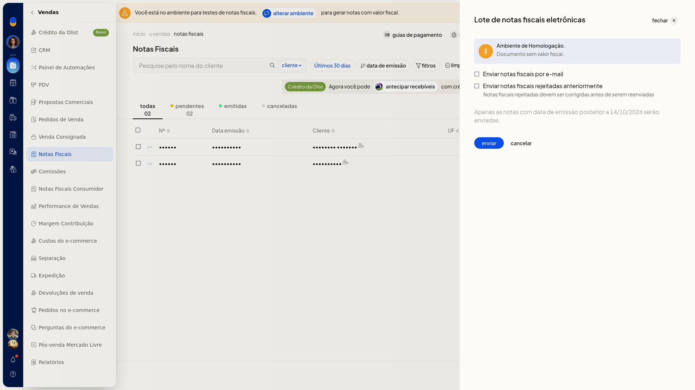
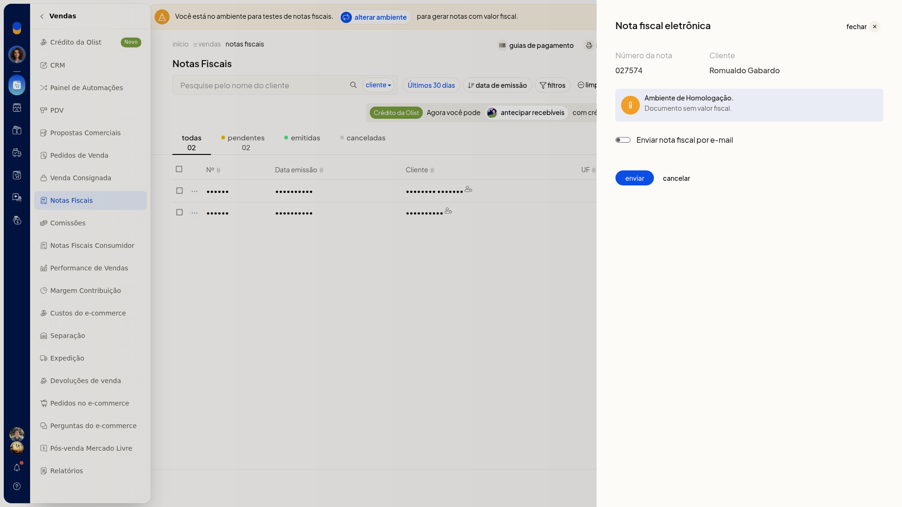

Autorizar notas na SEFAZ
No ERP da Olist, você envia notas fiscais pendentes para autorização na SEFAZ. Dá para enviar várias notas de uma vez ou uma nota por vez, até a pré-confirmação de envio.
As duas formas ficam em Vendas > Notas Fiscais.
Pré-requisitos
- A lista precisa ter nota pendente.
Importante
- O painel mostra Ambiente de Homologação.
- Só serão enviadas notas emitidas após 14/10/2026.
- No lote, Enviar notas fiscais por e-mail e Enviar notas fiscais rejeitadas anteriormente abrem desmarcadas.
- Na nota individual, Enviar nota fiscal por e-mail abre desmarcada.
Instruções
Autorizar notas pendentes em lote
-
Acesse Vendas > Notas Fiscais.

-
Clique em Autorizar pendentes ou abra Mais ações > Enviar notas pendentes.

-
Aguarde o painel Lote de notas fiscais eletrônicas terminar de carregar.
-
Confira Ambiente de Homologação e o aviso de data de emissão. Marque Enviar notas fiscais por e-mail ou Enviar notas fiscais rejeitadas anteriormente só se quiser essas opções.


-
Clique em enviar para seguir com o envio à SEFAZ. Clique em cancelar para voltar à lista sem enviar.
Autorizar uma nota
-
Acesse Vendas > Notas Fiscais.
-
Na linha da nota, abra o menu •••.

-
Clique em Autorizar no SEFAZ.
-
Aguarde o painel da nota fiscal eletrônica. Confira o aviso de homologação e marque Enviar nota fiscal por e-mail só se quiser essa opção.

-
Clique em enviar para seguir com o envio à SEFAZ. Clique em cancelar para voltar à lista sem enviar.
Resultado
O painel de lote ou o painel individual fica na pré-confirmação, com enviar e cancelar. Ao cancelar, a lista volta sem envio à SEFAZ.
Informações adicionais
- Autorizar pendentes e Enviar notas pendentes abrem o mesmo painel Lote de notas fiscais eletrônicas.
- Autorizar no SEFAZ não troca de página: o painel da nota abre na lista.